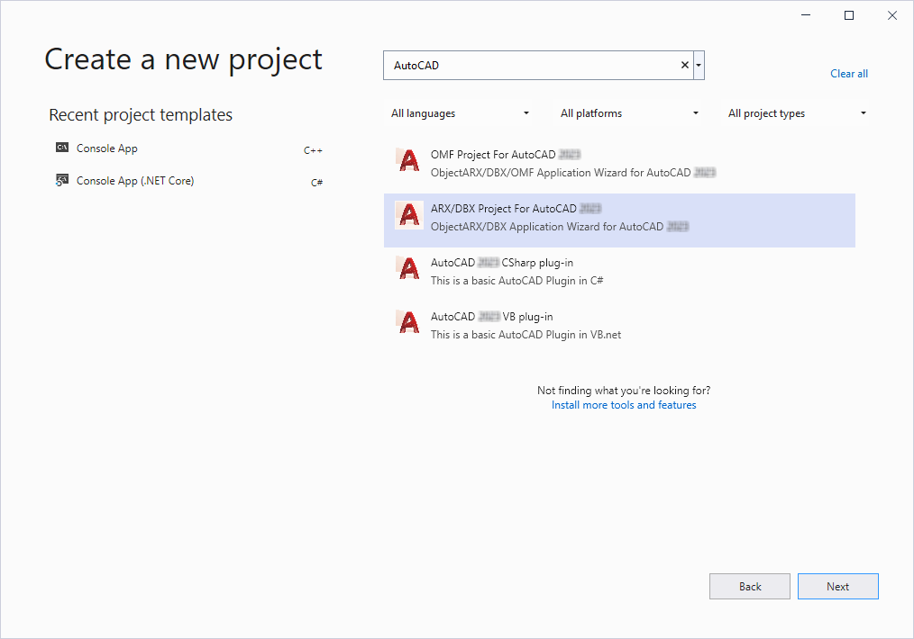
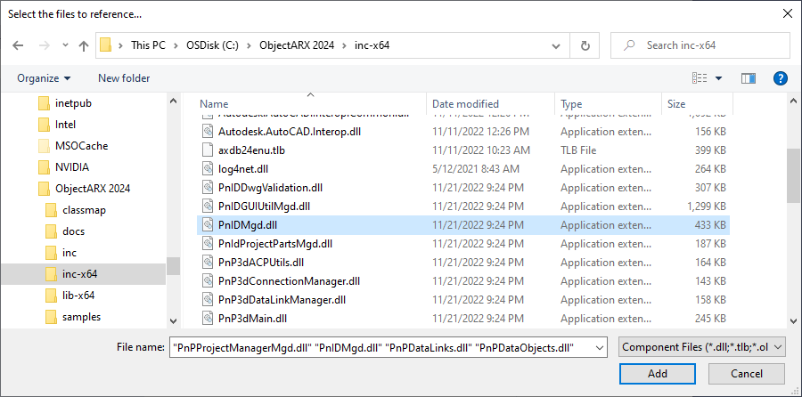

To create a new managed C# application, begin by setting up a standard AutoCAD managed Class Library .dll project.
If you have installed the ObjectARX Wizard for AutoCAD 2024, you can use the New Project wizard to begin an AutoCAD Managed C# Project. The wizard’s .MSI installer can be downloaded from here: https://www.autodesk.com/developautocad

After creating the standard AutoCAD Managed C# Project, select the project and use Add Reference to insert one or more P&ID managed assembly DLLs into the new project. The default folder name for the SDK assemblies is C:\ObjectARX\inc-x64.

The Plant SDK2024: Developer Reference (plantsdk_ref.chm) identifies the name of the DLL that needs to be added as a reference for each class in the ProcessPower namespace. Adding these references makes the ProcessPower namespace available to the project.
A general description of the available Assemblies is presented in Plant 3D and P&ID Managed Classes of this guide.